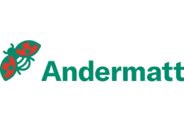
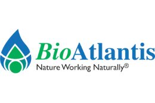
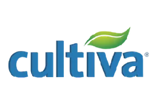
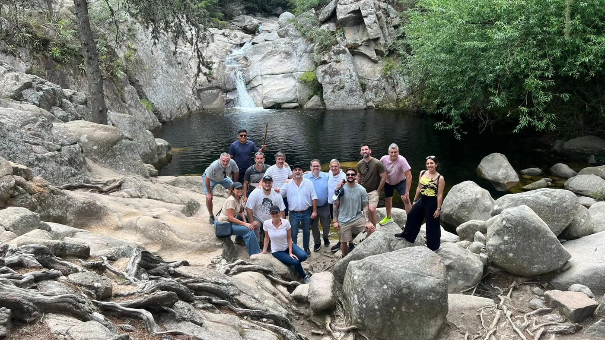

Tundrabac
Bioestimulante para semillas de invierno que activa la germinación en frío.
Ver ficha técnica →Líderes en especialidades
Alimentos y medio ambiente saludables para todos. Control biológico, feromonas, biofertilizantes y bioestimulantes para cada etapa del cultivo.



Nuestra historia
Desarrollamos y distribuimos soluciones de especialidad para una agricultura sustentable y eficiente. Con más de 25 años de trayectoria, hemos consolidado un portafolio referente en el mercado, gracias a la representación de compañías líderes a nivel mundial en Argentina. Nuestra integración al grupo suizo Andermatt Group en 2025 nos permite seguir acercando al productor argentino las últimas innovaciones globales, alineados bajo un mismo propósito: alimentos saludables y un medio ambiente sano para todos.

Portafolio
Una muestra de nuestras 31 soluciones de especialidad. Vas a encontrar el catálogo completo con filtros por cultivo y problemática.
Bioestimulante para semillas de invierno que activa la germinación en frío.
Ver ficha técnica →Inoculante y lubricante para proteger raíces y mejorar la siembra.
Ver ficha técnica →Bioinsecticida viral (granulovirus) altamente específico para el control de Cydia pomonella.
Ver ficha técnica →Feromona líquida microencapsulada para confusión sexual y control de carpocapsa en frutales.
Ver ficha técnica →Suplemento de cutícula premium para mejorar la calidad y protección del fruto.
Ver ficha técnica →Aporte de silicio biodisponible para fortalecer la planta y mejorar su respuesta frente al estrés.
Ver ficha técnica →Beneficios
Soluciones sustentables y asesoramiento para implementar tecnologías sin fricción.
Soluciones eficientes orientadas a sistemas productivos más responsables.
Acompañamiento en adopción, uso y mejores prácticas en campo.
Microorganismos benéficos, biofertilizantes y bioestimulantes.
Control de plagas, enfermedades y promotores de rendimiento.